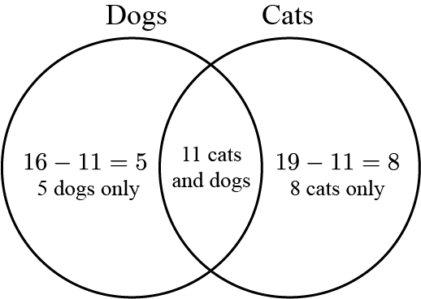

Problem
There are \(30\) students in Ms. Chan’s class. They were discussing their pets. They were asked three questions and the results are shown in the table below:
| Question | Number of Students Who Answered Yes |
|---|---|
| Do you have at least one dog at home? | \(16\) |
| Do you have at least one cat at home? | \(19\) |
| Do you have both at least one cat and at least one dog at home? | \(11\) |
How many students have neither cats nor dogs at home? You may use a Venn diagram to help solve this problem.

Not printing this page? You can use the Venn diagram on our interactive worksheet.
Solution
Since \(11\) students have both at least one cat and at least one dog, we can put \(11\) in the overlapping section of the Venn diagram. Now, \(16\) students have at least one dog at home and \(11\) have dogs and cats, so \(16-11 = 5\) students have only dogs at home. Similarly, \(19\) students have at least one cat at home, so \(19-11 = 8\) students have only cats at home. The Venn diagram below summarizes this.

Now we need to add up all the pet owners.
\(5 \text{ (dogs only)} + 11 \text{ (cats and dogs)} + 8 \text{ (cats only)} = 24 \text{ pet owners}\).
There are \(30\) students in the class in total. Therefore the remaining \(30 - 24 = 6\) students do not have cats nor dogs as pets.
Teacher’s Notes
A Venn diagram is a way to visualize logical relationships among sets. Set theory is a fundamental area of mathematics. Consider two sets: \(A\) and \(B\). The union of \(A\) and \(B\), denoted by \(A \cup B\), is the set that contains all of the elements that appear in either \(A\) or \(B\) (or both). The intersection of \(A\) and \(B\), denoted by \(A \cap B\), is the set that contains all of the elements that appear in both \(A\) and \(B\). The complement of \(A\), denoted \(\overline{A}\), is the set that contains all the elements that do not appear in set \(A\).
In this problem, the union is the set containing the \(24\) students who own either a cat or a dog or both. The intersection is the set containing the \(11\) students who own both a cat and a dog. The complement of the union is the set containing the \(6\) students who own neither a cat nor a dog.
A Venn diagram may involve more than two sets. For example, here is a diagram of three sets, \(A\), \(B\), and \(C\), that shows eight regions:
| Intersection | Region(s) |
|---|---|
| \(A \cap B\) | 2 and 4 |
| \(A \cap C\) | 3 and 4 |
| \(B \cap C\) | 4 and 6 |
| \(A \cap \overline{B} \cap \overline{C}\) | 1 |
| \(A \cap B \cap \overline{C}\) | 2 |
| \(A \cap \overline{B} \cap C\) | 3 |
| \(A \cap B \cap C\) | 4 |
| \(\overline{A} \cap B \cap \overline{C}\) | 5 |
| \(\overline{A} \cap B \cap C\) | 6 |
| \(\overline{A} \cap \overline{B} \cap C\) | 7 |
| \(\overline{A} \cap \overline{B} \cap \overline{C}\) | 8 |
Drawing a Venn diagram with 4 or more sets and all possible intersections gets very tricky.